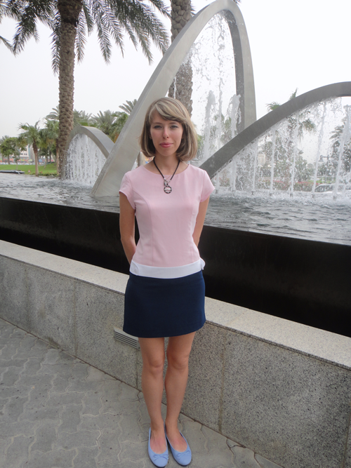
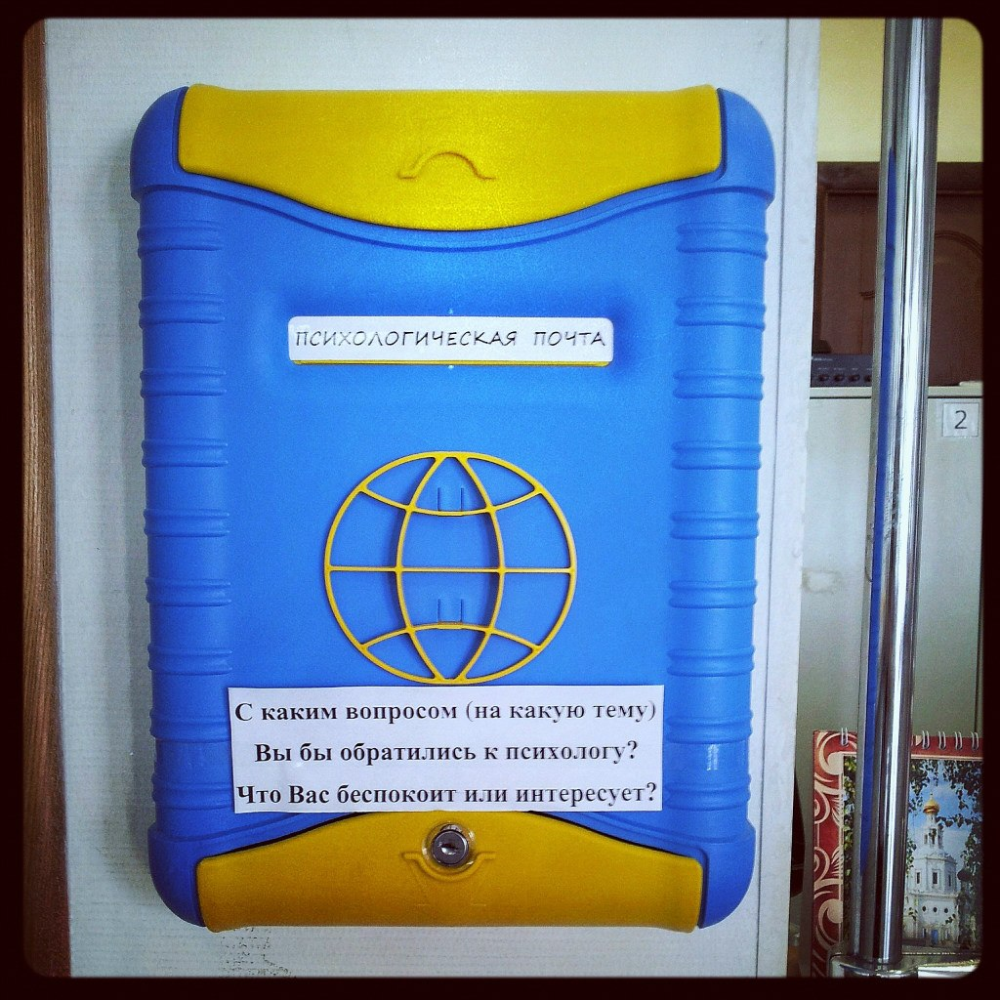

Здравствуйте! Меня зовут Гусева Виталина Алексеевна.
В 2013-м году я окончила Московский Университет Государственного Управления с красным дипломом и получила квалификацию "Психолог. Преподаватель психологии".
Моя специализация - психологическое консультирование.
С 2014-го года работаю в Государственном бюджетном образовательном учреждении города Москвы Московский центральный дворец творчества детей и молодёжи. Моя должность — педагог-психолог.
Мы находимся по адресу: г. Москва, ул. Александра Невского д. 4.
Вы можете обратиться ко мне за бесплатной психологической помощью с 10:00 до 18:00 по будням.
Приходите в 101 кабинет или записывайтесь по телефону +7 499 251-90-21.

Если у Вас есть личная проблема, которую Вы пытаетесь решить
и при этом чувствуете себя некомфортно, или Вас интересует конкретная жизненная ситуация связанная с семьей, работой, друзьями – обо всем этом Вы можете написать и положить в ящик, отправив записку психологической почтой, указав свои контактные данные.
Ваш вопрос будет обязательно рассмотрен, и Вы получите конфиденциальный ответ!